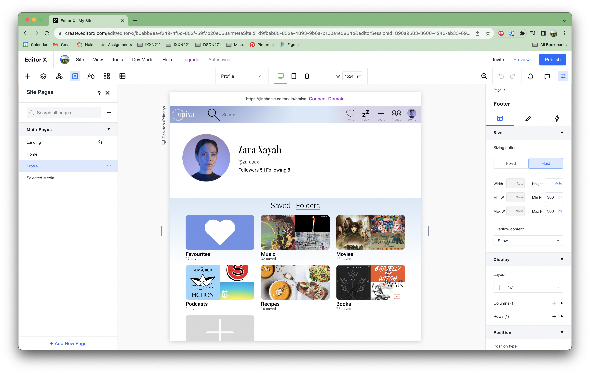
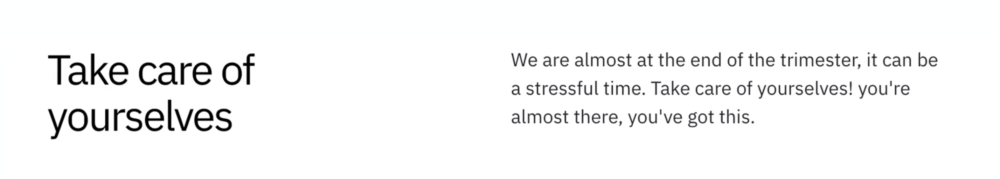
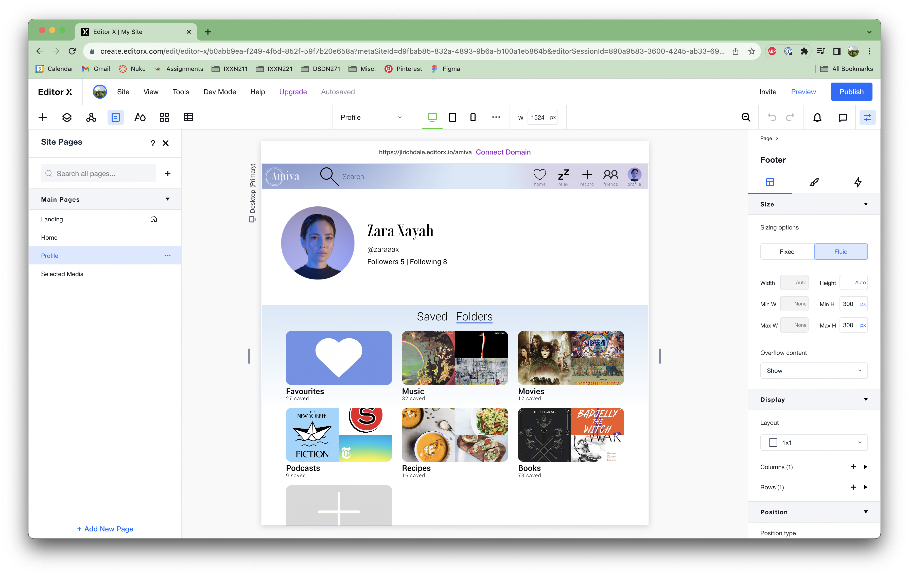
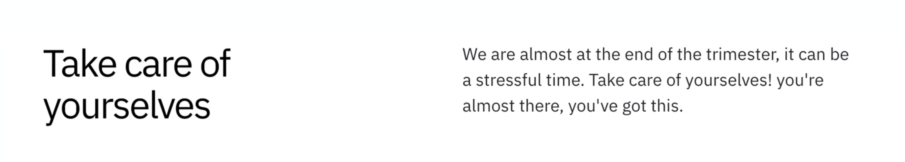

Week 10 Blog: Website CMS Creation
Lecture
We had quite a short lecture this week, we just discussed Assignment 2.2 submission and what is expected from the weekly blog. It was helpful to be reminded of what we did each week as a lot of my blog entries were a bit sparse. Seeing Shiv and Jamie’s blogs was helpful and both were super cool! I found Shiv’s advice really helpful and Jamie had a lot of dedication writing a blog almost every day! I appreciated the encouraging message at the end of the lecture (above).Assignment
I made my website using EditorX this week and to be honest I found it really tough. To tell the truth, I initially started making my website in WebFlow but had to switch after discovering I could only make two web pages on the free subscription plan.The first page I made was the landing page, which was luckily very simple and helped me get my bearings with the program. I then made the profile page, applying the feedback I got on my website in the last project by adding a search feature and labels to the icons in the navigation bar. After that, I made the home page and the selected media page.
The most difficult part was definitely making the website properly responsive to different screen widths, which was frustrating because theoretically I knew what I needed to do, I just struggled figuring out how to do it in Editor X.